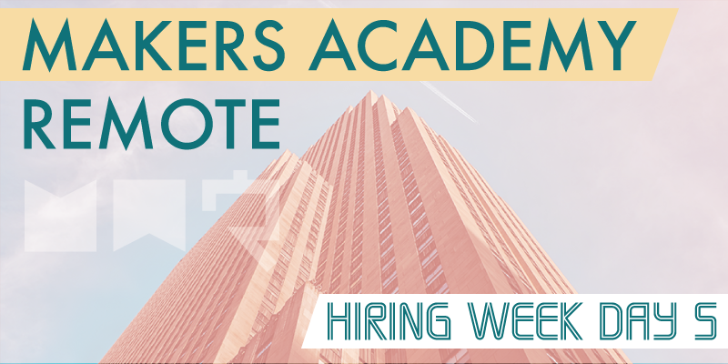
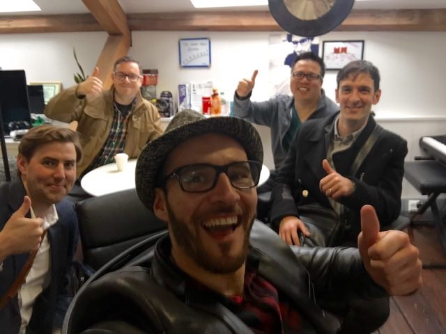

I'm really glad that I made the effort to travel to Makers Academy HQ in London for the final day of our course. For the majority of remote students the day had pretty much no input from Makers Academy, it was simply a day set aside to begin applying for jobs. For the on-site students a careers fair was planned with a selection of hiring partners who are currently looking for junior developers. A handful of us remote students were close enough to London to attend the careers fair, and it made for an awesome final day.
Everything is real
It was really strange meeting some of my cohort in real life after having worked remotely with them so closely for the past four months (including the pre-course). It was equally strange seeing the Makers Academy HQ. Over the past few months we've seen several views of parts of the building in the backgrounds of our workshops, and in marketing materials, and to actually attend in person made the place feel somehow more real.
It was great to be able to meet some of the staff too, I managed to have a catch up with Ruben, Zara and Spike, and they couldn't have been nicer, they really made us remote students feel welcome, like a part of the Makers family. We were given a tour of the three floors that make up Makers Academy HQ, the building is such an amazing space to work in and there's a buzz of creativity in the air. The majority of the coaches weren't in attendance however, because they'd all gone to the Isle of Wight together for a group retreat before the next cohort begins.
Careers fair
As for the careers fair, it began with a round of presentations from each of the hiring partners, who were given around five minutes each to tell us about their company, and why we might like to work there. After the presentations it was a case of jumping in and networking with the crowd, we were free to talk with the hiring partners and ask ask them any questions we had. It was interesting to chat with so many different hiring partners, some seemed very corporate, others were small start-ups, and each had its own unique way of working. Some employers were solely based from their own offices while others work from their clients locations. It all highlighted the fact that hiring partners can have very differing requirements, and that I need to decide exactly what I want from my first software development job.
Once the meet and greet had come to an end the event was effectively over, and the five of us remote students stayed a while longer just to soak up the atmosphere and tour the building some more. Spike offered us some beers, and everybody we met found the time to chat with us. Spike explained to us that Makers Academy holds regular graduate meet ups, and that we're all invited to attend whenever we like.
Of course we couldn't let the occasion pass without indulging in the obligatory selfie…

From left to right: Russell, myself, Eduardo, Godfrey and Marco. We also saw Douglas later at the pub, but we forgot to take any pictures with him.
After we finally left the building the five of us went for lunch, followed by a few drinks at the pub. It was so awesome to finally chat to some of the guys in person, and after going through such an intensive course together we had loads to talk about.
We are family
I think that one of my biggest takeaways from the day was that even though the course is now complete, we're each still very much a part of the Makers Academy family. Being lucky enough to see the building in person made it feel somehow more real, and after meeting some of the staff I've come away with the feeling that I really am a part of the alumni, of something that's very real, a fact that's perhaps a bit harder to appreciate for most remote students.
As for the majority of remote students who weren't fortunate enough to attend the careers fair, I suspect they might not have had a very fulfilling final day. I believe that this is a failing of the remote course, that it feels like there's no closure. After devoting our lives to the course for months, the final week simply drifts away, and it really feels lacking of any final meet up or retrospective with our entire cohort and coach. However that aside, I really can't say enough good things about Makers Academy, it's been a life changing experience for me and I'm incredibly grateful for the opportunity it's given me.
While the course is now over, I intend to keep this blog alive. I have more to say about Makers Academy, and after that I'll continue blogging as I embark upon my new career as some sort of developer!